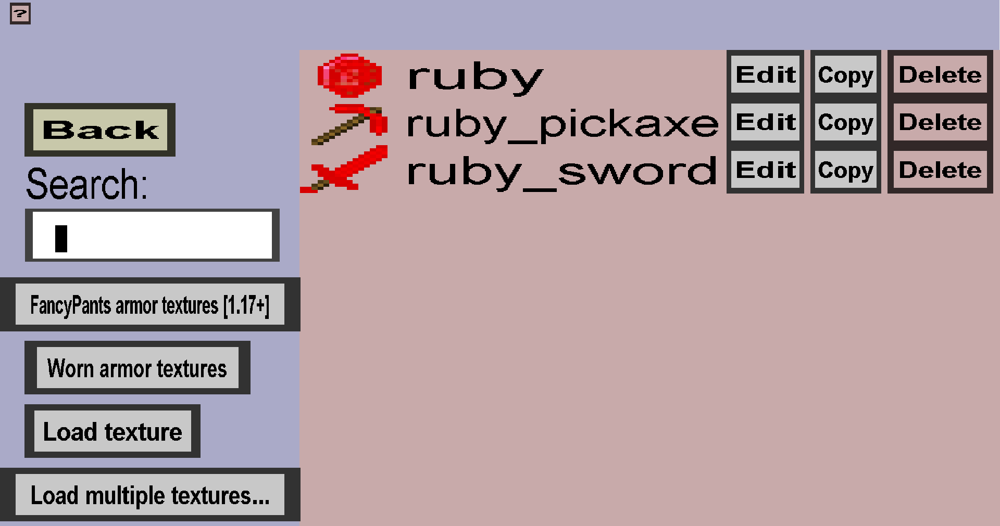

The texture overview shows an overview of all textures that were loaded into the item set. Also, it provides a way to actually load new textures into the item set. If your item set contains the 3 textures of the ruby example tutorial, it should look like this:
All textures you want to use must be in here. They are most commonly used for items, but can also be used for projectile covers in later versions of the editor. When you load a texture into your item set, the editor will store a copy of the image used. This means that editing, moving or deleted the image on your computer won't have any effect directly on textures that are already loaded in here. To update or change the textures, you will really need its corresponding 'Edit' button.
To load a new texture into your item set (and thus this menu), you need to click on the 'Load texture' button, which will bring you to the texture type selection menu.
If you are interested in worn armor textures, you can click on the 'Worn armor textures' button, which will take you to the armor texture overview.
To go back to the item set edit menu, click on the 'Back' button.
For each loaded texture, there is an 'Edit', 'Copy' and 'Delete' button. The 'Edit' button will bring you to the texture edit menu where you can edit the corresponding texture. The 'Copy' button will bring you to another texture edit menu where you can create a 'new' texture using the same image. This particular copy is not going to be very useful, but could have some use cases. The 'Delete' button will remove the texture from the item set (and this menu). Deleting is not allowed if there are items or projectile covers that are still using that texture. Deleting a texture will not delete its image from your computer, it can just on longer be used in the item set.